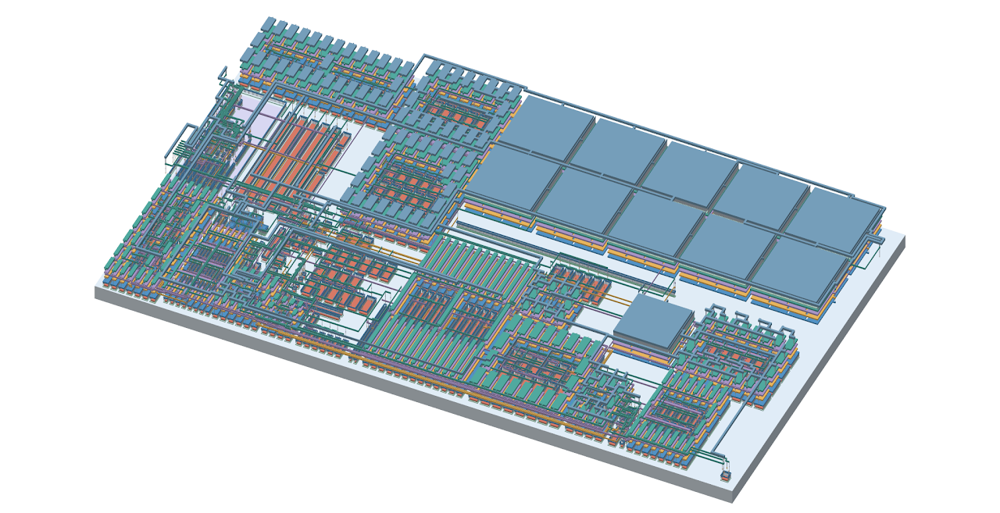

GF180MCU-D · Chipalooza #3 · 13 November 2026
682.8 × 396.76 µm · DRC: 0 · LVS: 533 units matched
Substantially lower supply-path resistance, restored amplifier bias and four passing nominal startup/restart cases. PSRR/current/noise regressions and existing output-loading limits remain explicit. Core review candidate; full electrical and harness signoff remain open.

The original main and power-rail revision were rebuilt and extracted with the same pinned toolchain and unmodified foundry decks. Device placement and schematic are unchanged. Both core LVS and both extraction-topology LVS checks pass; all 360 fixed-code corner DC points and ten nominal DC/AC cases complete.
| RCC metric at TT / 25 C / trim 72 | Baseline → new, 3.3 V | Baseline → new, 5 V |
|---|---|---|
| Vref, V | 1.193160339 → 1.193159120 | 1.193320126 → 1.193321834 |
| Analog current, µA | 24.06451 → 24.26253 | 31.21471 → 31.58893 |
| Minimum PSRR, dB | 48.01155 → 47.98864 | 53.16803 → 53.10373 |
Minimum PSRR uses 481 points over 1 Hz–1 MHz. RCC conserves C-only net-pair capacitance; well/substrate resistance remains lumped and coupling positions approximate. The model is not independently validated signoff PEX. Raw RC results are also retained.
M1/M2/M5 source-to-AVDD resistance falls about 95%; PLOAD supply paths fall about 96%. MPFOLD, N3, RB_NL and VBNFOLDLOW have worse source-path resistance. Individual driving-point resistance is not summed operating IR drop.
Four new-layout RCC cases complete and pass: 3.3/5 V AVDD, analog-only and simultaneous analog/digital supply cycling, TT/25 C, trim 72, no external load. Cold settling after a 100 µs ramp is about 98–203 µs; restart settling is 48–113 µs. No UIC or artificial state kick is used. Four baseline cases time out after the same 600-second limit and remain incomplete, not electrical failures.
The original 60 dB PSRR criterion remains unmet. Full PVT startup, mismatch/trim yield, loop stability, device-voltage limits, independent PEX, distributed well/substrate RC, EM/IR and slot-4 harness integration remain open. Finite noise spectra imply about 2.2% higher numerical broadband RMS; native integrated totals are NaN on both layouts and remain unqualified. Both versions droop about 103 mV at a 1 µA load. All conditions and limitations are in the detailed review.
Complete review, including regressions and limitations · Machine-readable comparison · Verification manifest · Reproduction
Nominal DC/AC · Corner DC · PSRR diagnostics · Bias measurements · Geometry audit
The pre-rail main, October report and paper figures are preserved on design_review_2. Existing paper figures in figures/ describe that older release. Native dummy symbols and schematic source are unchanged; release/schematic-symbols/ retains the historical source-equivalence check.
Current GDS SHA-256: 83b53398d4d4e71c3c14c59bed86c0f3a999e9b0eef69ecd577c7207972433eb